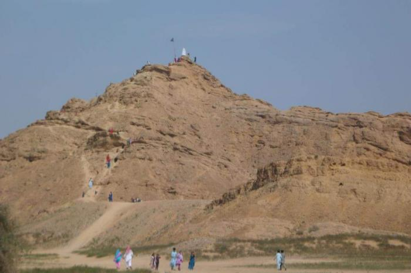

Jamia Masjid of Khudabad
Khudabad is an old ruined fortified city between Sehwan and Dadu about seven miles south of the letter place. It was for some time the capital of Kalhoras before they finally settled down at Hyderabad. In the midst of the ruins of the old town stands the great massive jamia Masjid. It has been lavishly adorned with enameled tiles. On either side of the entrance of the mosque is a beautiful panel which is a quite the best thing in tiles to be found in Sindh. Unlike the general run of design, which however floral the patterns are sis posed more or less in geometrical forms. It represents a tall and graceful plant lily order whose leaves, flowers and buds sprout from the central stem and fall over right and left in easy natural curves
Shah Godro

Makhdoom Bilawal
Makhdoom Bilawal Bin Jam Hassan Samo (1451-1523) was a sufi saint, philosopher and poet from Sindh, Pakistan. He is also referred as Makhdum Bilal or Bilali Makhdum. He belonged to Samma Royalty and was a member of the ruling family of Thatta. He was ordered to be crushed alive in a seed grinder after the Battle of Talti for opposing the Arguns conquest of Sindh in 1522. The shrine of Shaheed Makhdoom Bilawal Samo is in Baghban village, seven miles to the north of Dadu in Sindh, adjacent to be Indus Highway. Near the shrine is a Jamia Masjid and a water pond. The mosque at his tomb was constructed by his devotee Sardar Mahboob Khan Wagan (Chief Sardar of Wagan Tribe). In the vicinity of the shrine there are also mazaars of very famous saints such as Makhdoom Danyal, who was a spiritual teacher of Makhdoom Bilawal. Makhdoom Bilawal's annual Urs (death anniversary) is held on the 30 Safar - the second month of the Muslim lunar calendar.
Dargah syed Seni Musarni
Shiva Mandir, Johi, Dadu
The Temple of Shiva (Shiva Mandir) of Johi is about 200 years old and is locally known as “Qubi”. Situated in the south of Johi, this temple has unique architecture. Johi is located at a distance of 17 km west of Dadu city, at the edge of desert of Kachho. Originally, the temple was built at a distance from Johi but now it is surrounded by buildings. The presence of ancient Shiva temple in Johi and the well-established fact that the original name of Sehwan was Siwistan, it can be safely said that people of Sehwan worshipped Lord Shiva as their main deity. The distinct and unusual construction of the temple makes it a unique and beautiful structure. It has two dome type structures: one is tall and erect (Qubi) and is about 70 feet high, while the other is small and round. It had four arched entrances but at present two entrances have been closed. Iron, cement and cheeroli (gypsum) have been used in the construction of the temple. Originally, idols were placed on both the domes but were removed after the Partition in 1947. The remains of the broken idols can be seen on the outer walls of the dome type structure of the mandir. Scenes of elephant and pig fights are carved on the arches of the entrances of the temple. The paintings on the outer wall have mostly vanished now.